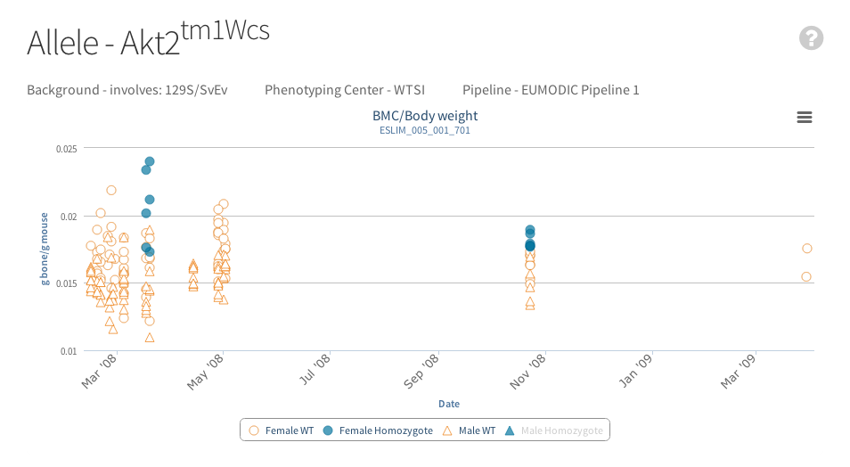
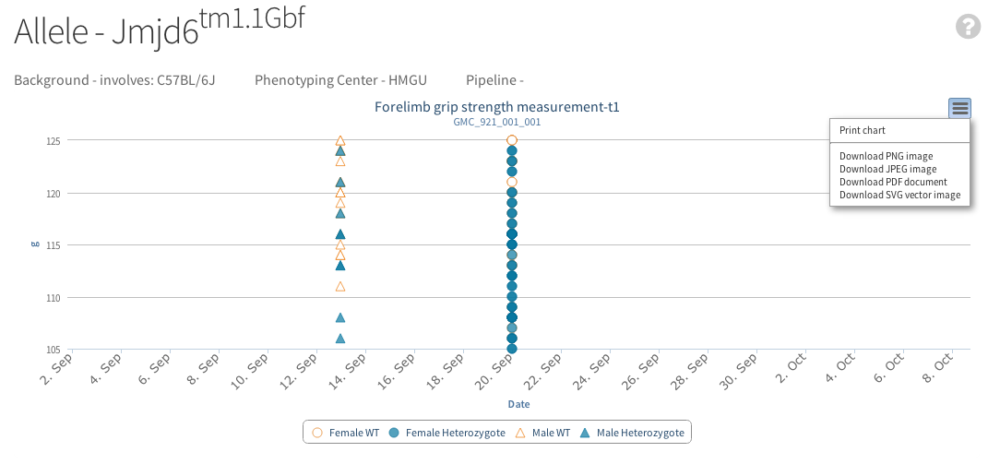
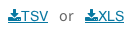

More information about the way IMPC uses graphs.
Where is the data coming from?
Currently data for the graphs are obtained from legacy data with associated phenotype calls, p values and effect sizes as calculated from Europhenome. Association tables from gene and phenotype pages contain links to the original data in the Europhenome resource. Graphs next to these links are new graphs representing the same data from Europhenome.
Rows in tables with IMPC for the "Analysis" use the same data set but the p values and other model fitting estimates are calculated by the new IMPC statistical methods. New data from the IMPC procedures once quality controlled is also available with an IMPC label.

Interacting with Graphs
Graphs are interective so that you can adjust the view to your liking. Click on a legend will remove a set of data from the graph. This is especially useful if you wish to remove "noise" from a graph and focus on the control or experimental data. 
After clicking on the control legend the male homozygote data has dissappeared:
Hovering over a data point or error bars displays extra information about the data point:
If appropriate the graph will allow you to zoom in on a data set by clicking and dragging to create a square/zoomable area:
Once zoomed a "Reset zoom" button appears at the right of the graph to enable the graph to be reset to original position:

Exporting Graph Data
An export button is always visible on the right hand side of the graphs where the graph picture can be exported in png, jpeg, pdf or svg format which will be downloaded to your computer: 
The data used to generate the graphs can be downloaded in XLS or TSV formats from the buttons on the top of the page (). This will export data for all graphs shown on the page. Data for males and females from the same experiment will be shown in the same table while for different zygosities, organizations or strains there will be separate tables exported in the same file. Following we present a list of exported values accompanied by a short description when needed.
| Column | Description |
|---|---|
| pipelineName | Pipeline through which the phenotyping was done, i.e. EUMODIC pipelines |
| pipelineStableId | Pipeline id |
| procedureStableId | Procedure id |
| procedureName | Procedure name |
| parameterStableId | Parameter id |
| parameterName | Parameter name |
| strain | Mouse strain used |
| geneSymbol | Gene symbol |
| geneAccession | Gene MGI id |
| organisation | Organization name |
| colonyId | Colony id |
| dateOfExperiment | Date of experiment |
| externalSampleId | Animal id |
| zygosity | Zygosity |
| sex | Sex |
| group | This field has only 2 values: control or experiment |
| category | Column is exported only for categorical data. It contains the label of the category assigned. |
| meta data | Shows any meta data in respect of equipment used which can be used to seperate the data sets used for statistical analysis |
| dataPoint | Coulmn is exported for unidimensional or time series data. It contains the value resulted from the measurment decribed by the current procedure. |
| discretePoint | Column exported for time series data. It contains the relative timepoints at which the measurments were made. |
A restful web service is also available for retrieving information pertaining to experiments via a web browser or a programming language of your choice. Documentation for this can be found here.
Types of Graphs and Equations
Currently 4 types of graph exist in the IMPC portal from the IMPC:
- Categorical Bar Graphs
- Unidimensional Scatter and Box Plot Graphs
- Time Series Graphs
- Scatter Plots Showing Data Grouped by Date
Categorical Bar Graphs

Categorical graphs contain data where an observation can be categorised into one of two or more groups e.g. Abnormal Eye or Normal Eye. Graphs are presented as bar graphs with a table underneath. If IMPC data is available this will be displayed. Otherwise if data from Europhenome is available, the p values and max effects as determined by Europhenoome will be displayed. Note that these may not correlate exactly with the data displayed in the graphs although every attempt has been made to make them correlate. (see statistic help for more information).
Unidimensional Scatter and Box Plot Graphs

Where an observation can be measured on a continuous basis (e.g. red blood cell counts or tail length), we display them in a mixed box and scatter plot. The first column contains a box plot for wild-type data and the second a scatter plot for that same wild type data. The third column is a box plot for homozygote or heterozygote data and the 4th will be
a scatter plot for the same data. Hover over the box in the graph will show the basic statistics for that set of data:

Time Series Graphs
Where an observation can be measured as a time series (e.g. cumulative food intake), we display the data in a line graph and scatter plot. The line graph will contain two lines, one each for wild-type and mutant data. The data points displayed are the mean of all data collected at that timepoint and the whiskers indicate standard deviation. Hover over the points to see basic statistics about the data.
Scatter Plots Showing Data grouped by Date
When the data for a parameter is collected at various points in time, a scatter plot will show each data value on the y a-xis and the date/time the data was collected on the x-axis.